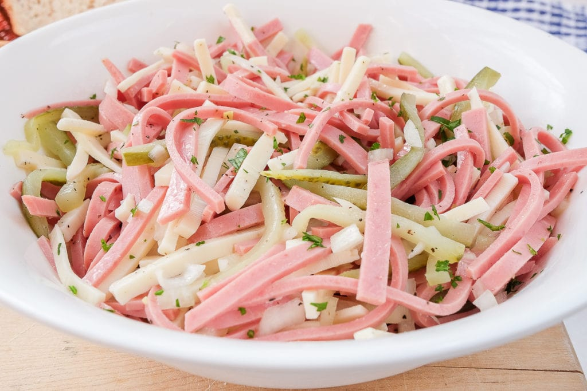

Wurstsalat (German Sausage Salad)
Homepage

Description
Craving something meaty but want it to be quick and easy? Wurstsalat is the perfect dish for you!
Made from just a few ingredients - including wurst (sausage), cheese, onions, and pickles - this hearty snack salad is served with a simple vinaigrette dressing.
Our Wurstsalat tastes great with fresh crusty bread or soft pretzels for a classic “Brotzeit” (a German term for a savory snack or small, early dinner)!
Ingredients
- 9 ounces lyoner sausage (bologna also works)
- 6 ounces swiss cheese (optional)
- 3-4 baby dill pickles
- 1 small yellow onion
- chopped parsley to garnish (optional)
- 3 tablespoons white wine vinegar
- 2 tablespoons neutral-tasting oil
- 2 tablespoons pickle juice
- salt and pepper to taste
Steps
- Cut the sausage into slices (if it isn't already sliced) and then into thin strips. Cut the swiss cheese and the baby dill pickles into thin strips as well. Place everything into a large mixing bowl.
- Peel the onion and chop it into very small cubes or thin strips and add them to the bowl as well.
- Now prepare the dressing. For that, add the white wine vinegar, oil, pickle juice, salt, and pepper to a small bowl. Mix everything well then pour it over the ingredients in the large bowl.
- Mix everything until the sausage and cheese are evenly coated in the dressing.
- Cover the bowl and place the sausage salad in the fridge for an hour so the flavors can mingle (this makes a big difference in taste, in our opinion!).
- After the hour is up, remove the salad from the fridge, taste it, and add more salt, pepper, and/or vinegar to taste.
- Serve the salad with fresh soft pretzels or crusty bread.